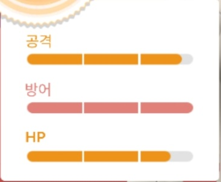

포켓몬고에서의 개체값을 구성하는 요소는 3가지입니다.
공격, 방어, HP
공격
우선 공격 개체에 대해 설명 드리겠습니다.
포켓몬고에서 CP는 공격 개체에 주로 영향을 받습니다.
포켓몬고에서의 CP 변환 공식이 있습니다. 이에 따라 공격 개체가 높을수록 CP가 높아집니다.
이 CP 변환 공식은 수학적 개념도 포함되어 있고, 자세히 알지 않아도 되는 요소이기에 자세히 설명하지는 않겠습니다만
궁금해하시는 분들이 계실테니 공식만 올려드리겠습니다.
(대략적인 설명은 필자에게 개인적으로 문의주세요.)

(1. 단, 소수점은 버리고 계산한다. / 2. 공격, 방어, 체력은 자세히 말하자면 유효 공격력, 유효 방어력, 유효 체력이다.)
따라서 "공격 개체가 높을수록 포켓몬의 CP가 많이 오른다."고 기억하시면 됩니다.
방어, HP
방어와 HP는 포켓몬의 내구와 연관이 있습니다.
CP 변환 공식에 따르면 이 둘은 공격개체에 비해 CP에 영향을 적게 주는 편입니다.
HP와 방어는 PVP에서 중요한 요소이니 후반부에서 다시 정확히 설명드리겠습니다.
IV(개체값)
IV(개체값)는 공격, 방어, HP를 0 ~ 15 사이의 범위에서 랜덤하게 결정됩니다.
이를 통해 개체값의 %를 자세히 알 수 있습니다.

예시로 이것은 포켓몬의 개체값을 표로 보여주는 사진입니다. (게임 내의 기능)